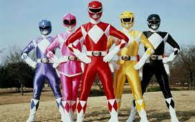

A primeira geração dos Power Rangers começou com "Mighty Morphin Power Rangers" em 1993, uma série que combinava cenas de ação japonesa e atores americanos. Cinco adolescentes - Jason, Zack, Kimberly, Trini e Billy - foram escolhidos como heróis para proteger a Terra. Cada Ranger representava uma cor e um dinossauro, promovendo diversidade. A série se tornou um sucesso global, inspirando várias temporadas subsequentes, filmes e mídias. Com seu impacto cultural duradouro, os Power Rangers permanecem como ícones de aventura e união.

voltar